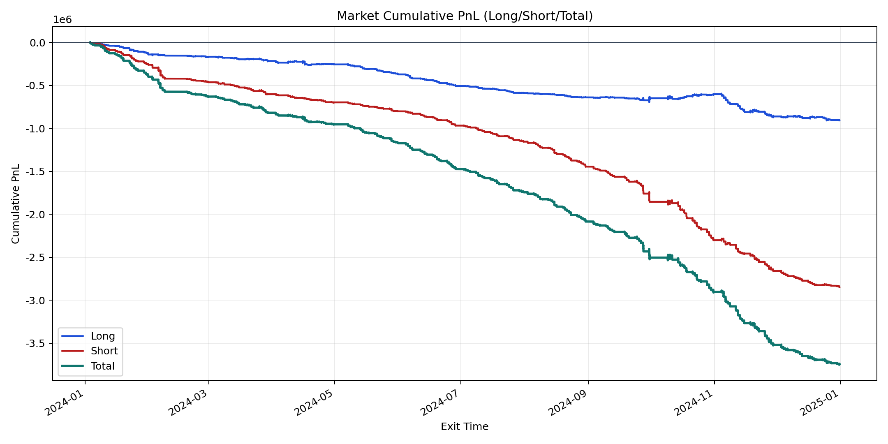
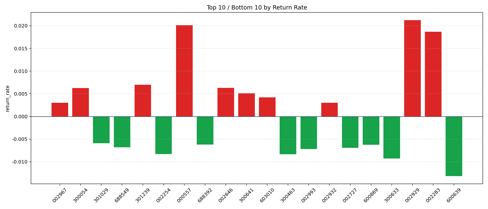

| repo_root | /home/haoranyou/data/output/dynamic_AUM_TAKER_index1000 |
|---|---|
| period_months | 12 |
| period_label | 2024-01-03_to_2024-12-31 |
| start_time | 2024-01-03 09:46:42 |
| end_time | 2024-12-31 14:38:02 |
| n_trades | 164043 |
| n_symbols | 746 |
| total_pnl | -3748965.05905001 |
| long_total_pnl | -903721.0055999815 |
| short_total_pnl | -2845244.0534500284 |
| total_entry_notional | 2917072071.9999995 |
| long_entry_notional | 1167346739.0 |
| short_entry_notional | 1749725333.0 |
| total_return_rate | -0.0012851808136778908 |
| long_return_rate | -0.0007741667281943566 |
| short_return_rate | -0.001626108966812352 |
| top_symbols_by_return | ["002929", "000557", "002283", "301239", "002646", "300054", "300641", "603010", "002932", "002967"] |
| bottom_symbols_by_return | ["600639", "300633", "300463", "002254", "002993", "002727", "688549", "600869", "688392", "301029"] |

